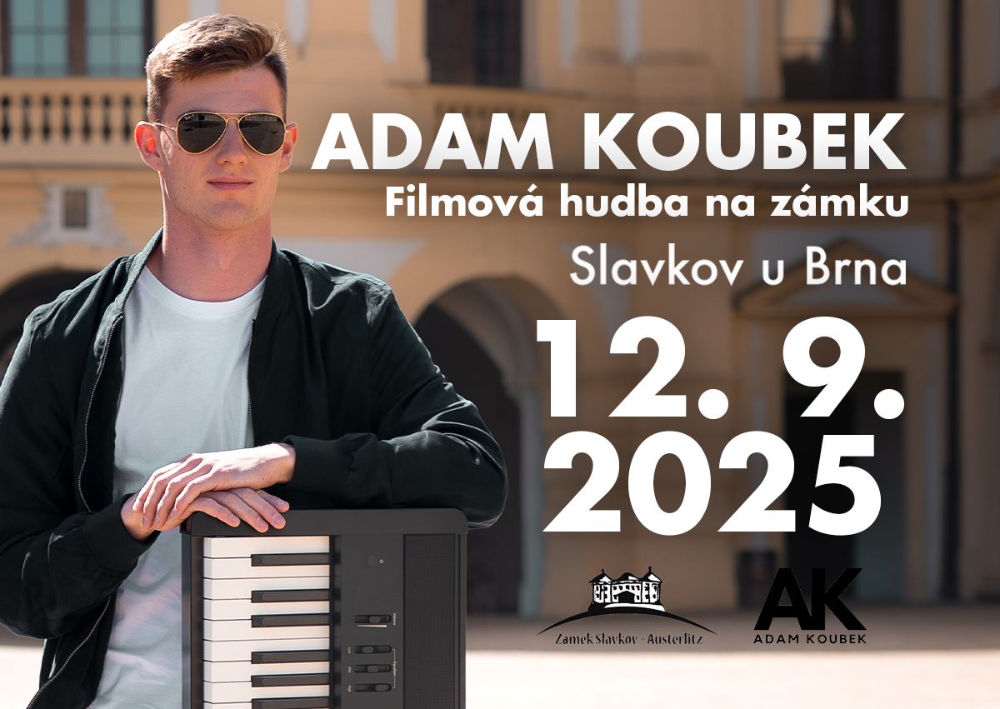
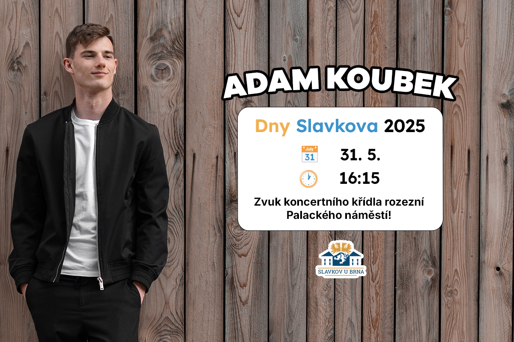

Koncerty
Všechny aktuální informace naleznete na mém Instagramu.

12. 9. 2025 - Filmová hudba na zámku

Zakoupit vstupenkyV historickém sále zámku ve Slavkově zazní 12. září výběr těch nejznámějších filmových melodií v originálních klavírních aranžích devatenáctiletého klavíristy Adama Koubka. Adam se hře na klavír věnuje od dětství, 13 let studoval na ZUŠ Slavkov u Brna a v posledních letech se profiluje jako interpret filmové a populární hudby.
Během koncertu zazní ikonické skladby z filmů jako Piráti z Karibiku, James Bond: Není čas zemřít, Gladiátor, Forrest Gump nebo Hra o trůny v originálních klavírních úpravách. Chybět nebudou ani hity od Eltona Johna, Adele a dalších známých interpretů.
Kromě vystupování se Adam věnuje také online tvorbě – jedno z jeho klavírních videí překročilo hranici milionu zhlédnutí. Jeho hudba vyniká důrazem na emoce a vždy dokáže vytvořit hudebně podmanivou atmosféru, která osloví jak fanoušky filmové hudby, tak i širokou veřejnost.
Filmová hudba na zámku slibuje večer plný silných melodií a klidného naladění – ideální pro celou rodinu.
31. 5. 2025 - Dny Slavkova

🎹 Dny Slavkova
Zazní filmová hudba, popové hity a další oblíbené melodie.
Přijďte si užít krásný den plný hudby a zábavy!
Přidat do Google Kalendáře